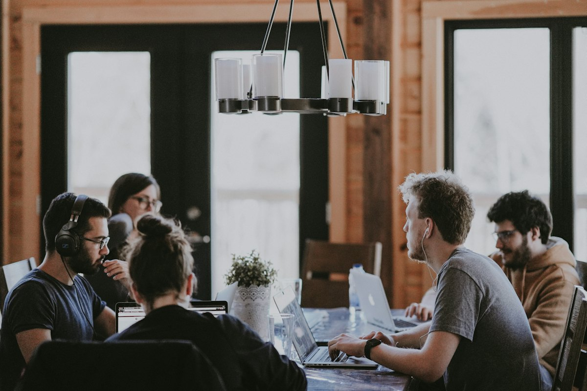

Mikro Run
Esnaf ve mikro işletmeler için ekonomik ERP. e-Dönüşüm paketi dahil gelir.
- Faturalama
- Stok takibi
- e-Dönüşüm
- Raporlar
İş analizinden kuruluma, eğitimden 7/24 teknik desteğe kadar sürecin tamamı tek ekipten. 500'den fazla işletme bu yolu bizimle yürüdü.
Mikro Yazılım yetkili çözüm ortağı. Lisans, kurulum, eğitim ve destek tek elden.
Jumper ve Flyer ürün ailelerinde akredite Silver Partner'ız. Lisans, kurulum, eğitim ve destek tek elden — arada üçüncü bir firma yok.
 JumperSilver Partner
JumperSilver Partner FlyerSilver Partner
FlyerSilver PartnerDört üründen hangisinin size uyduğunu ücretsiz danışmanlıkta birlikte belirliyoruz.
Esnaf ve mikro işletmeler için ekonomik ERP. e-Dönüşüm paketi dahil gelir.
KOBİ'ler için kapsamlı ERP. İşiniz büyüdükçe yazılımınız da sizinle büyür.
Grup şirketleri ve holdingler için tam entegre kurumsal ERP platformu.
Mükellef yönetimini kolaylaştıran, müşavirler için profesyonel çözüm.
İş analizinden eğitime, kurulumdan 7/24 desteğe kadar sürecin tamamında yanınızdayız.
İhtiyaçlarınızı detaylı analiz ederek en uygun çözümü belirliyoruz.
Yazılımınızı profesyonelce kuruyor, mevcut sistemlerinizle entegre ediyoruz.
Ekibinizi yazılımı etkin kullanabilmeleri için kapsamlı eğitimlerle donatıyoruz.
7/24 teknik destek hizmetimizle her an yanınızdayız.
Yazılımınızı güncel tutuyor, performansını sürekli izliyoruz.
e-Fatura, e-Defter ve tüm e-belge süreçlerinizde uzman danışmanlık.
Analizden eğitime, depodan raporlamaya kadar işin yapıldığı yerde oluyoruz.

Mevcut süreçlerinizi yerinde inceliyor, hangi modüllerin gerektiğini birlikte netleştiriyoruz.

Raf düzeninden barkod sistemine, Zeus WMS kurulumuyla depoyu ERP'ye bağlıyoruz.

Kullanıcı ve yönetici eğitimleriyle ekibinizi sistemi gerçekten kullanır hâle getiriyoruz.

Deren Plaza'daki ofisimizden 500'den fazla işletmeye destek veriyoruz. Telefon, uzaktan erişim ya da yerinde — hangisi gerekiyorsa.
Mikro Jump ve Fly ürünlerine dahildir. GİB başvurusundan yasal uyumluluğa kadar yanınızdayız.
Neyin ne zaman yapılacağını baştan bilirsiniz. Canlıya aldıktan sonra da aynı ekiple çalışırsınız.
Bize ulaşın, ihtiyaçlarınızı dinleyelim.
İşletmenizi ve mevcut süreçlerinizi analiz edelim.
İhtiyacınıza göre size özel çözüm ve fiyat sunalım.
Yazılımı kuralım, verilerinizi aktaralım, sistemlerinizle entegre edelim.
Ekibinizi kullanıcı ve yönetici eğitimleriyle hazırlayalım.
7/24 teknik destek, güncelleme ve bakımla yanınızda olalım.
Yapay zeka destekli depo yönetim sistemi.
Bayi ve saha satış yönetim sistemi.
Perakende satış noktası (POS) çözümü.
Bulut yedekleme ve dosya paylaşımı.
Mobil işletme yönetimi uygulaması.
Pazaryeri ve web mağaza entegrasyonu.
Mikro Yazılım İş Ortağı'yız. 2017'den beri Mikro Yazılım'ın ERP ürünlerini işletmelere kuruyor, iş analizinden eğitime ve 7/24 teknik desteğe kadar sürecin tamamında yanınızda oluyoruz.
1-5 çalışan için Mikro Run, 5-50 için Mikro Jump, 50+ ve grup şirketleri için Mikro Fly. Mali müşavirler için Mikro Müşavir var.
Mikro Jump ve Fly'da tüm e-Dönüşüm çözümleri dahildir. Mikro Run'da e-Dönüşüm paketi ürünün içinde gelir.
Evet. Veri aktarımı kurulum hizmetimizin bir parçası. Mevcut sistemlerinizle entegrasyonu da biz yapıyoruz.
7/24 teknik destek veriyoruz: telefon, uzaktan erişim, yerinde destek ve öncelikli müdahale.
Olur. Trendyol, Hepsiburada, N11 ve Amazon entegrasyonu, depo için Zeus WMS, bayi ve saha satış için B2B/B4B çözümümüz var.
Ücretsiz demo ve danışmanlık için hemen iletişime geçin. Size uygun çözümü birlikte belirleyelim.